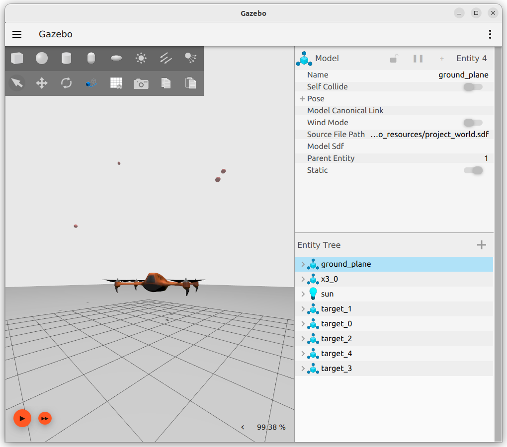

IoT Lab Lecture 7 - 26/04/2023
Exercise 8d - Moving towards a point
Now that the drone is facing the point, it should move towards it.
Moving in a 3D space can get quite confusing when working in 3D spaces.
Theoretically, in order to find the movement vector, you would have to calculate
the vector between the two points in space and then rotate it using the drone as
a frame of reference.
In practice, we won't need to do that: if you did the previous step, it means that the
drone is already facing the target, so it only has to move in two directions to reach it:
forward and up/down.
If you manage to find the 2D vector in this plane, your drone will move correctly. Give it a try!
Assuming that the movement is described by a vector (x,z), we are interested in the absolute value of x
(as we want to move the drone always forward), and the value of z (not absolute, we want negatives values here,
as the drone may need to fly to a lower point to reach its target).
Exercise 8e - Patrolling
We have everything ready to move the drone from point A to point B.
Can we generalize that approach to a set of points? And move from one point to another in a given order?
You should just iterate what we have built so far over a set of points. Give it a try!

Exercise 8f - Swarming
Everything is ready.
What you are requested here, is to edit your world sdf file to spawn two additional drones.
By working with remappings and/or namespaces in your launch file, your code should control the three drones to perform the patrolling
task for each of them.

Conclusions
We are done.
The code written in this lecture will be the starting point of your project.
The complete solution to all the exercises proposed will be available here the end of this week.
Note that the solution which will be provided will have a considerable amount of room for improvemnt, so your solutions for the exercise may actually be
better than the code we will proivde.
The code to use for you to test your solution will be available here after the lecture, and will include a new launch file which will automatically
start all the testing environment for you.
Have fun!